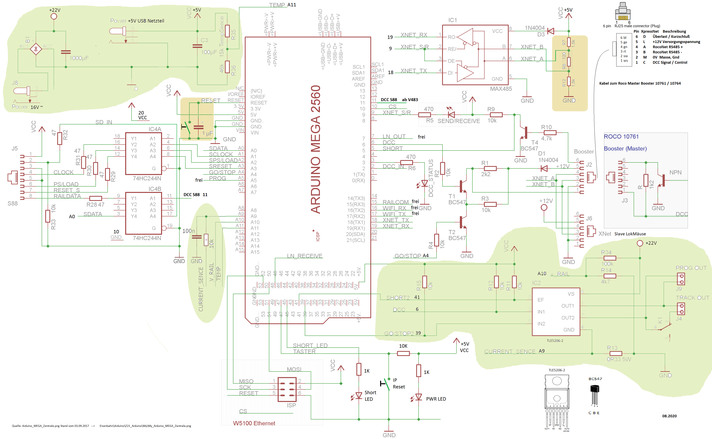
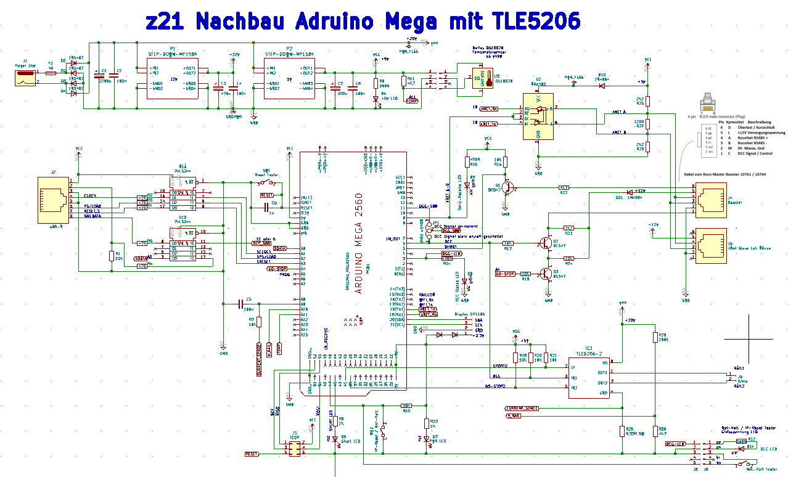

meine z21 DCC Eisenbahn Steuerung, mit s88-N Rückmelde Bus
kostengünstiger Nachbau einer DCC Eisenbahn Zentrale mit s88-N Bus,
auf Basis von Arduino Mega, Z21, für jene die gerne löten und die Steuerung selbst nachbauen.
Diese z21 Nachbau Dokumentation habe ursprünglich nur für mich erstellt und nachträglich für interessierte als Info bereitgestellt.
Quelle der Original Informationen:
z21 Arduino Zentrale (Atmega2560) Nachbau (externer Link)
Original z21 Arduino Mega (Atmega2560) Nachbau Zentrale Schaltplan (externer Link)
mein abgeänderter z21 Nachbau Schaltplan (Quelle V4.80) und in KiCad nachgezeichnet und aktualisiert:
 

Funktionsumfang meiner z21 Nachbau Variante: Stand V4.98 (V4.87)
- Arduino Mega (Atmega2560)
- XpressNet Bus zur Steuerung mit mehreren Roco Lokmäusen gleichzeitig.
- s88-N Rückmeldung Bus, Rückmelder und Steuerung der Weichen.
- Durch Verwendung dieser Rückmeldetechnik, sind keine Unterbrechungen in den Gleisen notwendig.
- interner Booster (TLE5206) zum Programmiergleis, zum Testen, Lesen und Schreiben der Lokdecoder CV's.
- LAN-Interface (W5100) zur Steuerung der z21 über LAN, von PC mit Rocrail.
- externe Roco Booster 10761 und/oder 10764 zum Fahren der Lokomotiven.
- (Temperaturanzeige mit Sensor Dallas DS18B20)
- Display SH1106 (SSD1306).
- externer Not-Halt Taster.
in meiner Variante nicht verwendete Funkionen gegenüber original Plan:
- kein LocoNet Bus
- kein WLAN Modul, ich bevorzuge LAN Anschluss zum PC - Steuerung mit Rocrail
- kein Relais für das Programmiergleis, den TLE5206 verwende ich direkt für das Programmiergleis, zum Testen, Lesen und Schreiben von Lok CV's
- RailCom Detektor Rückmeldung verwende ich nicht, die meisten meiner DCC Lokdecoder sind zu alt.
- Temperaturanzeige mit Sensor Dallas DS18B20, (nicht mehr verwendet, "One-Wire Bus" verursacht Fehlmeldungen der S88 Rückmelder)
meine Dokumentation:
- z21 Arduino Mega Zentrale (.doc) meine z21 Nachbau Dokumentation / Baubericht V4.80 - V4.98 (V4.98 aktualisiert 09-2025)
- Rocrail Konfiguration (.doc) mein Baubericht/Konfiguration zum Einsatz mit Rocrail (aktualisiert 09.2025)
- z21 Schaltplan in KiCad mein aktueller z21 gesamt Schaltplan (als .svg) Datei (aktualisiert 03.2025)
- z21 Schaltplan mein abgeänderter z21 Schaltplan (aktualisiert 08.2020)
- z21 Schaltplan Booster Stromversorgung und Booster (grün Teilschaltplan) (aktualisiert 07.2021)
- Booster IC Ersatz Teilplan mit L6203 da der TLE5206 schwer erhältlich ist (externer Link)